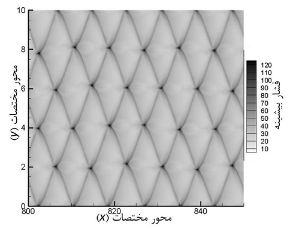
Regular cells
Shock front with periodic cellular patterns.
Selected projects in detonation, turbulence modeling, non‑Newtonian & elastoviscoplastic flows, porous media, and heat transfer.
From DNS/LES/RANS comparisons to EVP flows around bluff bodies and porous media, here’s a compact look at my research and simulations.
Regular vs. irregular cell structures, unburnt pockets, and shock dynamics. See paper.

Shock front with periodic cellular patterns.
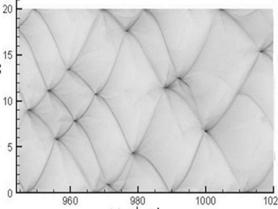
Break-up of periodicity; transverse wave interactions.
Evolution of the reaction front.
Thermal structure across the wave.
Pocket formation and consumption.
Cell growth and merging.
Shear‑layer roll‑up and vortex pairing.
2D hydrodynamic code with material interfaces (Level‑Set/VOF). Paper.
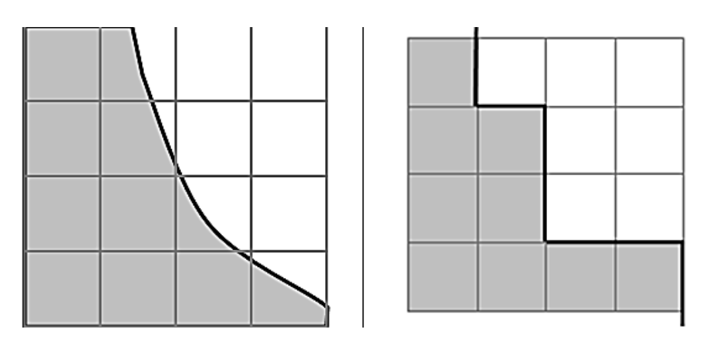
Single vs. multi‑material interface treatment.
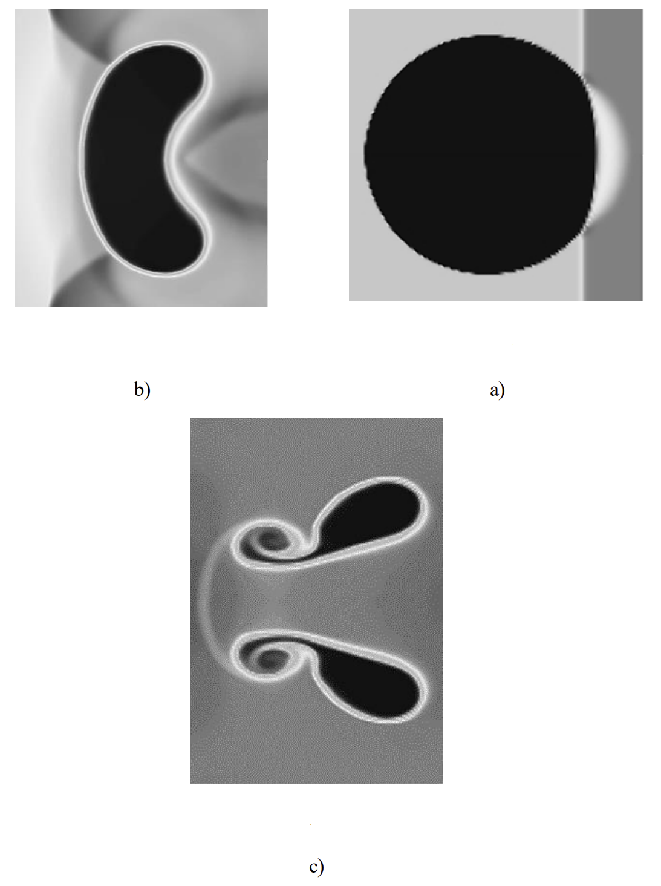
Shock–bubble interaction over time.
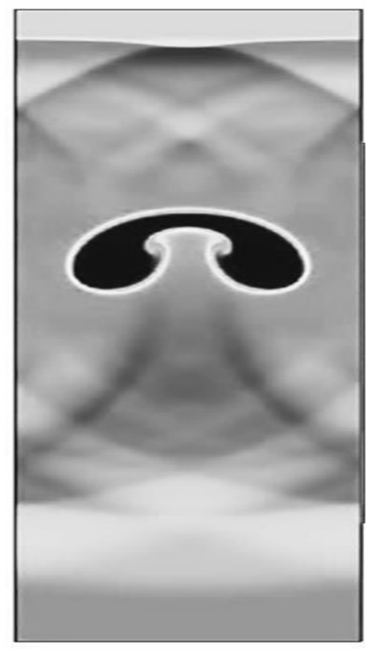
Compression/expansion phases.
Bubble deformation under shock.
Interface topology evolution.
Viscoelastic FENE‑P jet/mixing‑layer studies and subgrid modeling. Paper.
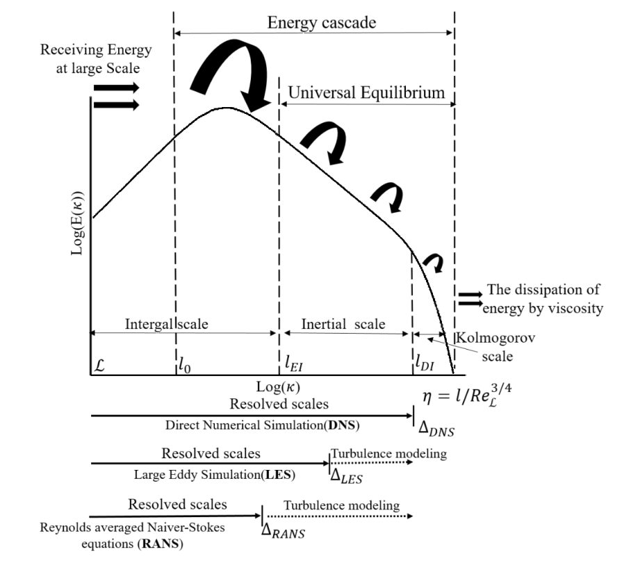
Accuracy vs. cost across models.
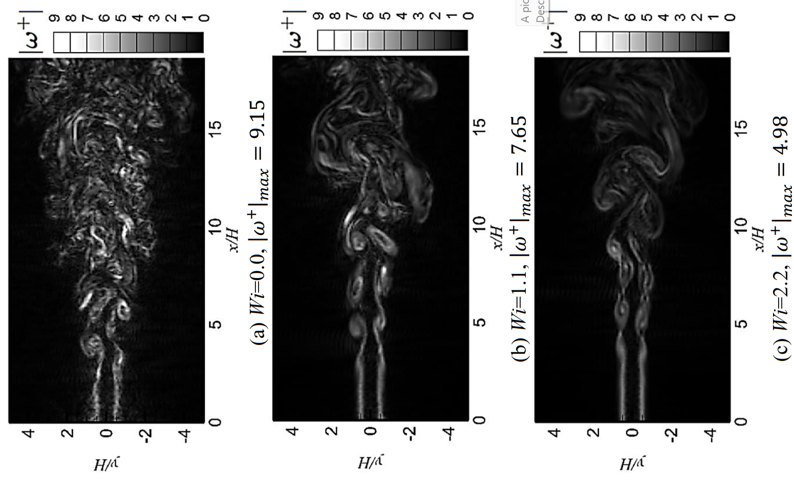
Shear‑layer structures.
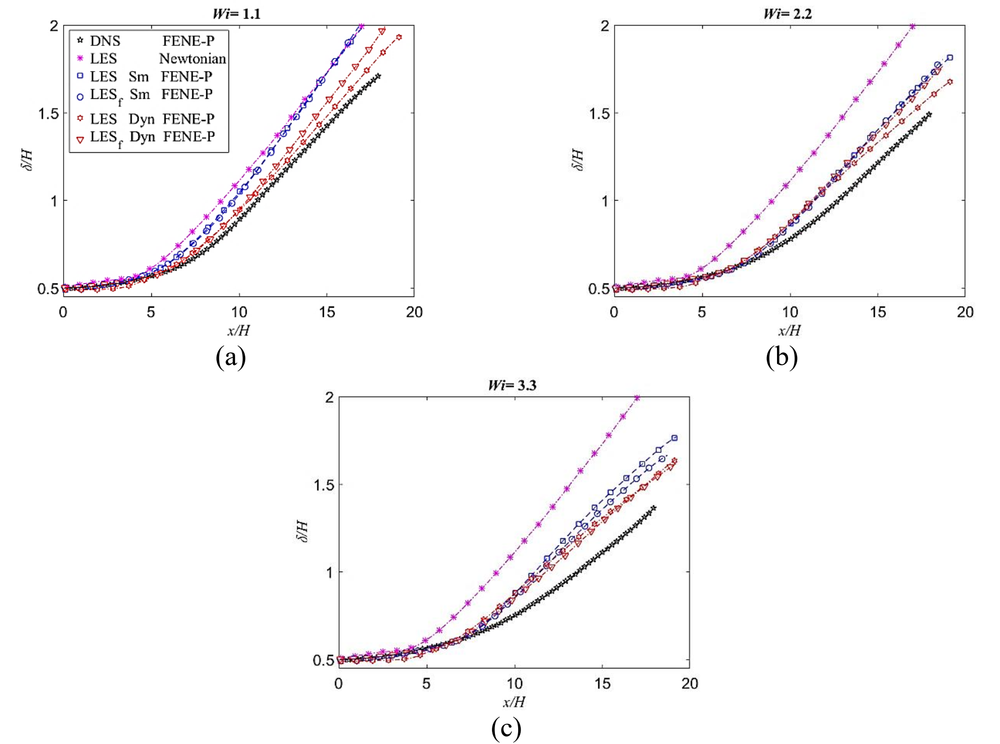
Growth vs. model choice.
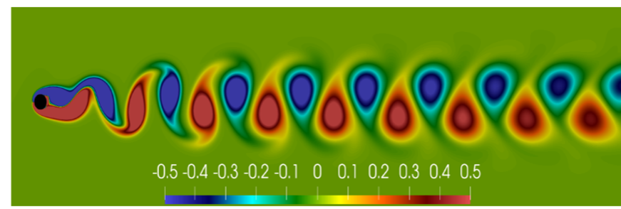
Baseline bluff‑body flow.
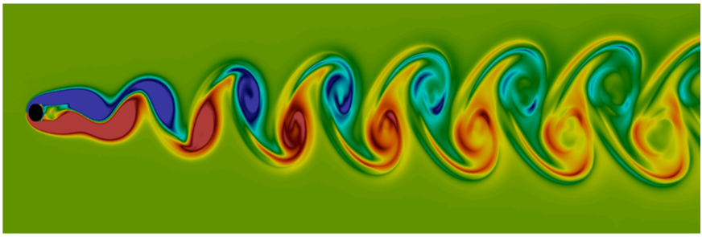
Yield‑stress effects & drag.
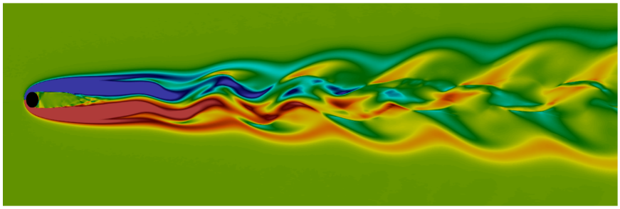
Vortex shedding alteration.
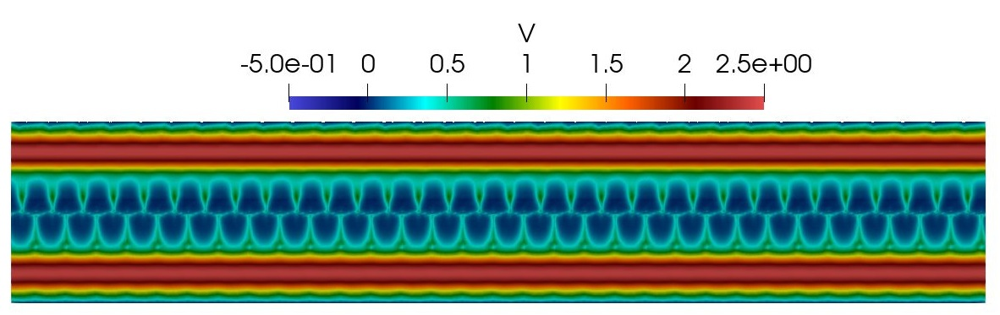
EuroHPC regular access results.
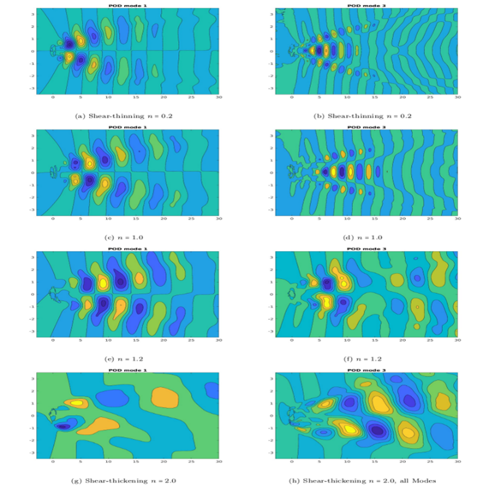
Low‑rank structures.
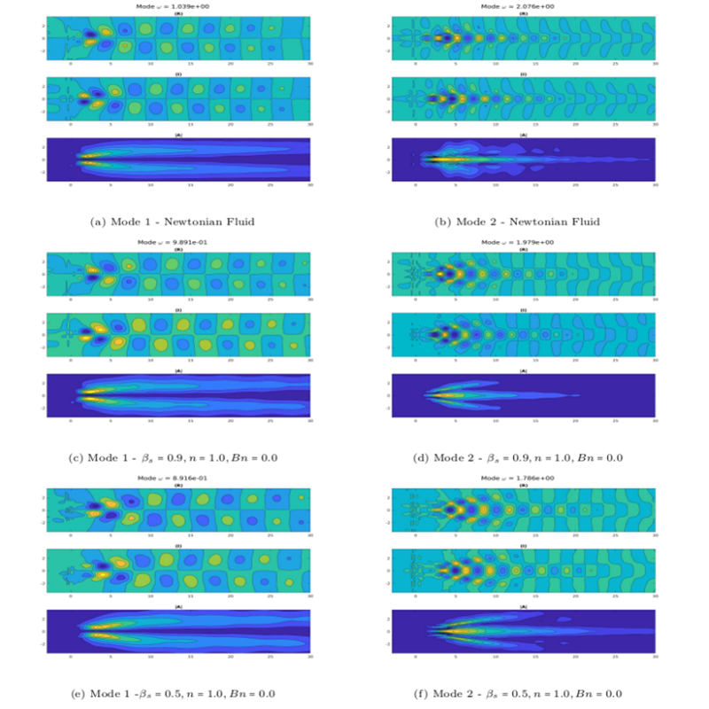
Frequency‑resolved dynamics.
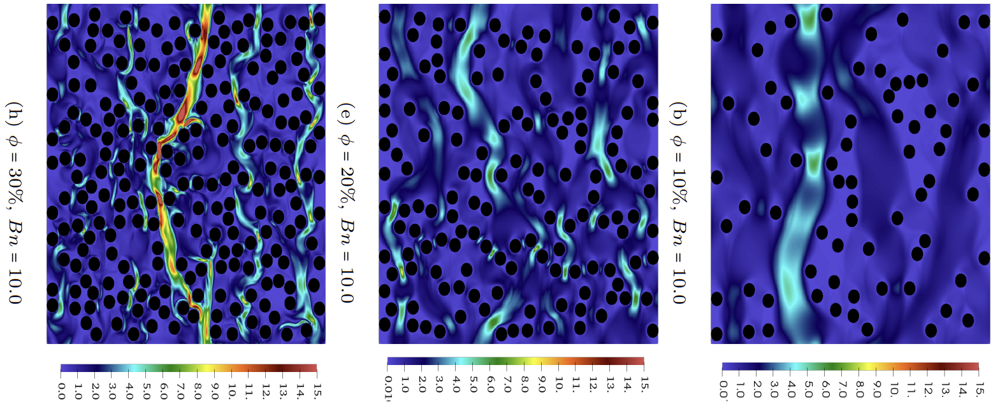
Hydrodynamics in randomised structures.
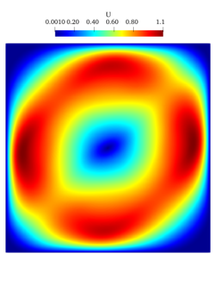
Buoyancy‑driven circulation.
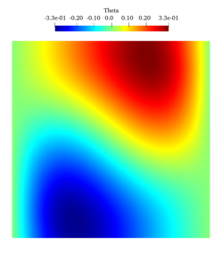
Thermal plumes & stratification.